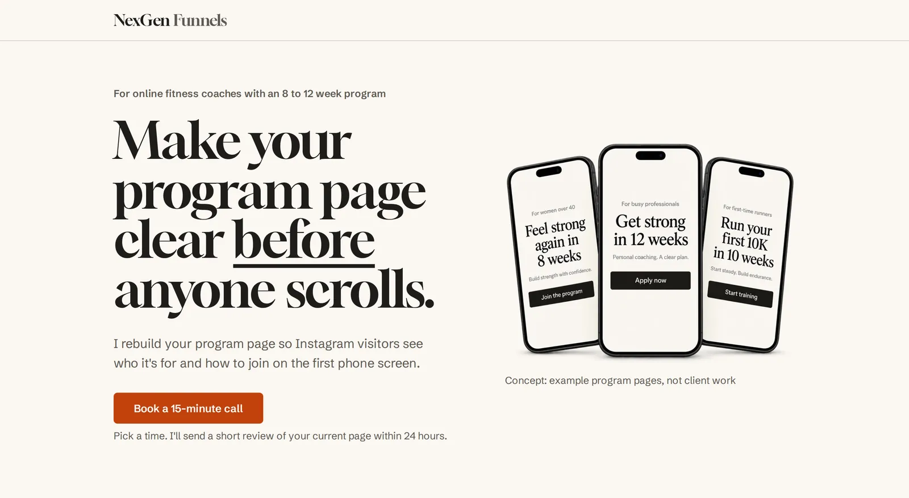
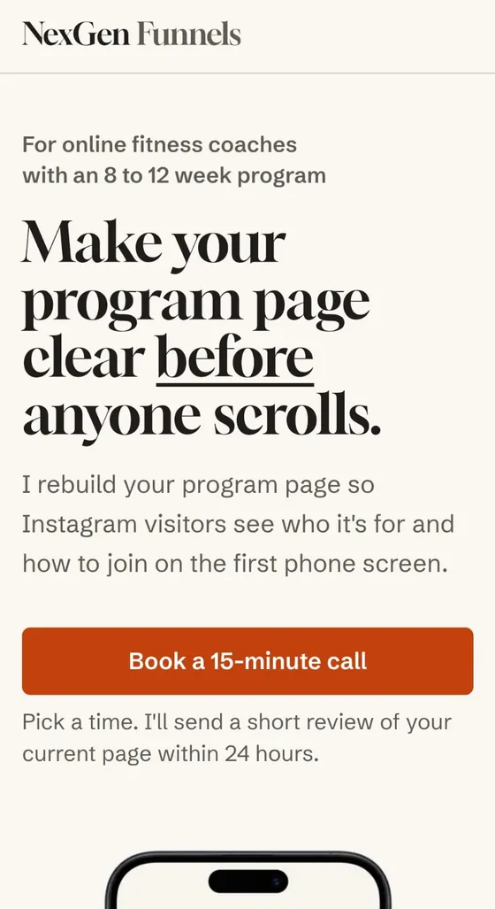
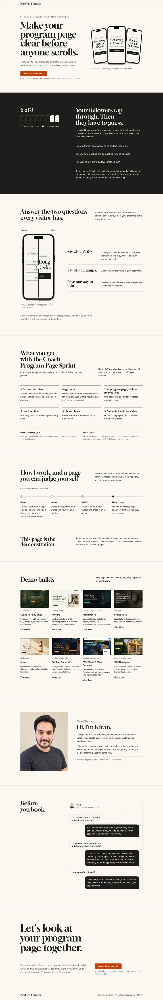
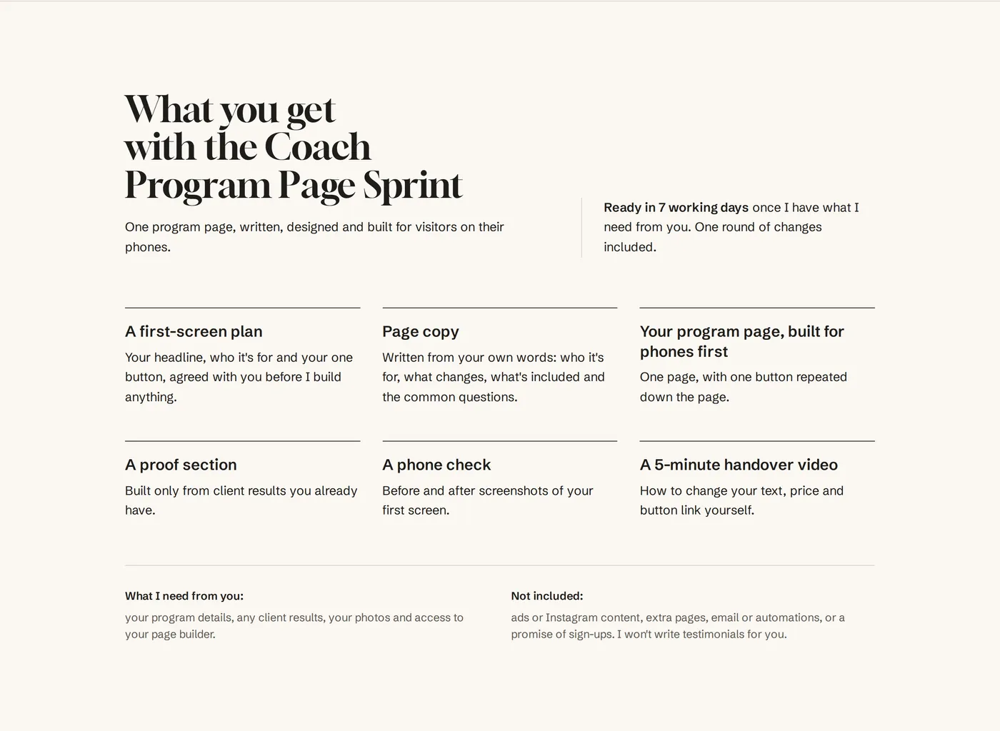

Case study · Landing page for online fitness coaches
Coach Program Page Sprint
One page that shows online fitness coaches who it's for and how to join, on the first screen of a phone.
Self-directed project. I designed and built this page for my own offer. It isn't paid client work, no client has bought the offer yet, and no traffic, booking or revenue figures are claimed.
Open the live page
Client
This page sells my own service, the Coach Program Page Sprint. It's for solo or small-team online fitness coaches who sell a fixed program of 8 to 12 weeks and get most of their leads from Instagram.
They want to fill each program intake from the followers they already have, without chasing every lead in their messages.
Problem
I opened 8 real coach program pages on a phone. On 6 of them, the first screen didn't show who the program was for or one clear way to join.
Instead I saw the program's name where "who it's for" should be, several buttons competing for one decision, and the way to join buried a few screens down.
That matters because a follower who taps through from Instagram has to scroll or guess. They may leave, or end up in the coach's messages asking questions. My own page had to show I could fix exactly that.
Strategy
I kept the whole page to one buyer, one problem and one action: book a 15-minute call.
Because the page sells clear first screens, its own first screen had to pass the same test. On a phone it shows who it's for, what changes and one button, without scrolling.
That ruled out extra sections, extra buttons and anything I couldn't prove. The price is shared on the call, so coaches judge what they get first.

Build
The page has nine short sections: the opening screen, the problem, the fix, what you get, how I work, demo builds, about me, common questions and a final booking section.
I wrote the plan and the words first, from a one-page brief. Then I set the section order and a few simple design rules (four colours, two fonts) before building anything.
I designed it in Claude Design and made the phone pictures with an AI image tool. It's hosted on Hostinger from GitHub, and the button opens a 15-minute Calendly booking.

Three decisions
One button, in two places only
I used a single "Book a 15-minute call" button at the top and the end, instead of my usual WhatsApp link, a button halfway down or one stuck to the bottom of the screen. The page criticises pages with competing buttons, so it couldn't do the same. The coach always has one obvious next step.
Honest proof instead of testimonials
The proof section opens with "This is a new offer, so there are no client results here yet", and every example is labelled as a concept or demo build. Presenting earlier pages as client work would break trust the moment a coach found out.
A real picture in the opening screen
I replaced grey placeholder boxes with phone pictures of example program pages, instead of a stock workout photo. The opening screen is what a stranger judges first, and the placeholder looked unfinished.

Result
The page is live. Before launch on 26 October 2026, I ran 12 checks on it:
- No sideways scrolling on any screen from a small phone (320px) to a laptop (1366px)
- Body text at least 16px, and buttons easy to tap
- Both buttons open the Calendly booking page
- A real test booking on a second phone went through, and the confirmation email arrived
- No invented testimonials, results or client logos
It hasn't had real traffic yet, so there are no booking or sales numbers to report.